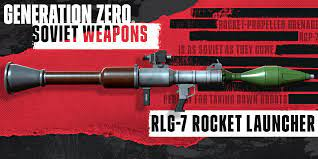
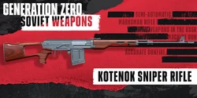
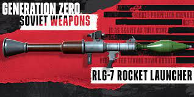
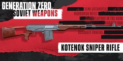
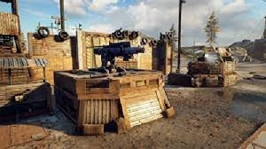
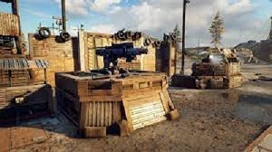

The US weapons pack gives you the N60 (M60) Machine gun, the N16 (M16) assault rifle, and the N9 hand gun.
 



The Soviet weapons pack contains the RPG-7, ATWAD Rifle, and the Kotenok sniper rifle.

The Base Building DLC makes it to where you can build spike traps (wall and floor), Sandbag positions
to fire from, and a mortar to fire.
 

The Base Support pack includes a medical trailer, snipers nest, jukebox, secruity fencing, and more decoration pieces.
The medical trailer can heal you when you run into the square and can only heal you if you put medkits in it's inventory.
The Jukebox is a decoration pieced that can play Generation Zero's music.
The snipers nest is like any of the other AI defence structures.

The US weapons pack 2 contains the COM-10 SMG, the S21 Marksman Rifle, and the G79 Grenade launcher aka the Thumper.
This pack comes with a Flamethrower, a pitchfork, and a bow.
Costs: $4.00